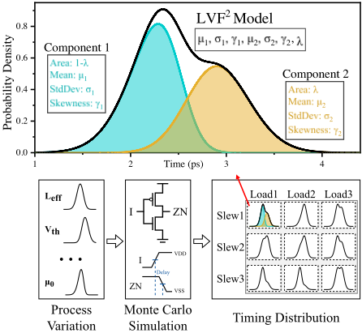
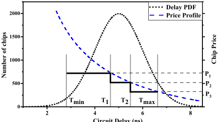
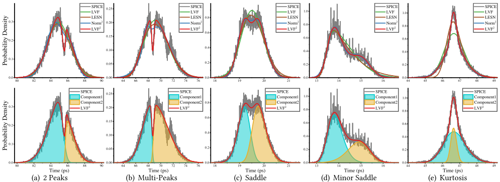
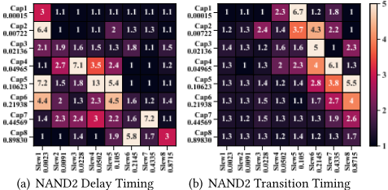
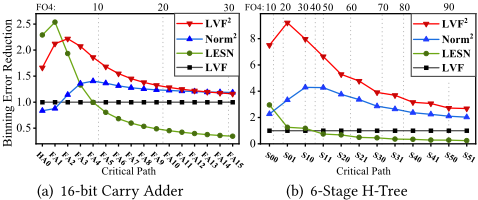

LVF2：一种基于高斯混合的统计时序模型，用于良率估计与速度分档（Speed Binning）
随着工艺微缩，工艺偏差使标准单元的 delay/transition 分布呈现多高斯分量与非对称形态，工业标准 LVF 基于单一 skew-normal 模型精度下降，影响 speed binning 与良率估计。论文提出 LVF2：用两个加权 skew-normal（SN）分布构成高斯混合模型，以 K-means 加矩估计初始化、EM 算法求解参数，并在 Liberty 库中新增 7 个属性实现与 LVF 向后兼容；同时用 CLT 与 Berry-Esseen 定理证明其路径级收益按 O(1/√n) 收敛，可据此在深逻辑深度时回退 LVF 以节省存储与计算。基于 TSMC 22nm 标准单元、每个 slew-load 分布 50k 个 LHS SPICE MC 样本的实验显示：相比 LVF，delay/transition 的 binning 误差分别降低 7.74×/9.56×，3σ-yield 误差分别降低 4.79×/7.18×；8-FO4 典型路径仍有约 2× 改善。论文还发现多高斯现象在 slew-load 表中呈对角分布规律，可作为量化非高斯程度并加速统计表征的精度指标。
工艺偏差随制程微缩加剧，使标准单元 delay/transition 的时序分布出现多高斯分量、非对称长尾等非高斯形态；工业标准 LVF 基于单一 skew-normal（单高斯）模型，此时拟合精度不足，导致 speed binning 分档概率与 3σ-yield 估计误差增大，进而影响制造良率与经济回报的评估。
提出 LVF2 统计时序模型：用两个加权 skew-normal（SN）分布的混合（GMM）拟合时序 PDF，可同时刻画多高斯分量、偏度与峰度；参数 θ=(λ,θ1,θ2) 采用点估计，以 K-means 聚类加矩估计给出初值，再用 EM 算法在 E 步/M 步间迭代求解非凸对数似然；在 Liberty 库中新增 7 个属性定义 LVF2，保证向后兼容（支持 LVF2 的 SSTA 工具可将 LVF 的 SN 分布识别为第一分量，库文件可同时支持两者）；并用 CLT/Berry-Esseen 定理给出 SSTA 传播中收益按 O(1/√n) 收敛的判据，指导何时从 LVF2 切回 LVF。
基于 TSMC 22nm 标准单元（TTGlobal_LocalMC corner，0.8V、25°C，每个 slew-load 分布 50k 个 LHS SPICE MC 样本，25 个组合单元、每 timing arc 8×8 共 64 组条件）：相比 LVF，binning 误差在 delay 降低 7.74×、transition 降低 9.56×
3σ-yield 误差在 delay 降低 4.79×、transition 降低 7.18×
路径级 block-based SSTA（以 SPICE MC 为 golden）：16-bit carry adder（30-FO4 关键路径）在 8-FO4 处改善 2×、路径末端降为 1.15×；6 级 H-tree（95-FO4）在 8-FO4 处改善 8×、末端 2.68×；典型 8-FO4 路径整体 binning 误差降低约 2×
发现多高斯现象在 8×8 slew-load 表中呈对角分布规律，LVF2 的 CDF RMSE 降低可作为量化多高斯程度、预测 PDF 形态并辅助加速统计表征的指标
相对已有工作的区别：(1) 此前工作与工业标准主要拟合各阶统计矩，本文在标准单元库层面系统验证了时序分布中的多高斯分量现象，并用两个带偏度的 SN 分量混合建模；(2) 相比已有 GMM-SSTA 工作（未考虑分量偏度、未做单元级全面验证），LVF2 保留 skewness 并能反映峰度，且给出完整的库级表征与评估；(3) 提出与 LVF 向后兼容的 Liberty 属性定义，库文件可同时支持 LVF 与 LVF2 而不冲突；(4) 用 Berry-Esseen 定理定量刻画路径级收益衰减规律，给出 LVF/LVF2 切换准则。
相关度级别：high
命中能力域：2.3 时序与物理实现
理由：论文核心是统计时序建模与 variation/yield 建模，直接命中 2.3 时序与物理实现域中明确列出的 'variation/yield 建模' 与 '先进工艺 sign-off 方法学'。团队在 LPDDR5X/HBM4/UCIe 等 IP 上需在先进工艺节点完成 timing closure 与 sign-off，所消费的标准单元库正是以 LVF 表征时序分布；若库端时序分布实际呈多高斯而 LVF 拟合不足，会直接影响 IP 的 3σ 时序裕量、频率达成与良率评估的可信度。论文关于 CLT 收敛（深逻辑深度收益衰减）与 slew-load 表对角多高斯规律的结论，对团队判断统计时序方法的适用边界、以及与库厂商/EDA 工具链沟通模型精度有直接参考价值。需注意团队角色是库的使用者而非表征者，LVF2 的实际落地主要依赖库厂商与 STA/SSTA 工具支持。
建议动作：深入精读并做内部分享
Junzhuo Zhou 1, 2，Li Huang 3，Haoxuan Xia 3，Yihui Cai 4，Leilei Jin 4，Xiao Shi 4，Wei Xing 2∗，Ting-Jung Lin 2∗，Lei He 2, 1
1 加利福尼亚大学洛杉矶分校
2 宁波东方理工大学数字孪生研究院，中国宁波
3 宁波诺丁汉大学
4 东南大学，中国南京
随着晶体管尺寸的不断缩小，工艺偏差已成为决定半导体良率与经济回报的关键因素。Liberty 变异格式（Liberty Variation Format, LVF）是当前基于单一高斯模型表达统计时序行为的工业标准。然而，随着工艺偏差的不断增大，当时序分布呈非高斯特性时，该标准会损失精度。本文提出一种新颖的 LVF2 分布模型，它组合了两个加权的偏正态（skewed-normal, SN）分布，能够更好地刻画多高斯时序分布，同时保持与 LVF 的向后兼容性。基于 TSMC 22nm 标准单元的实验表明，与 LVF 相比，LVF2 在延迟方面将分档误差降低了 7.74×，在转换时间方面降低了 9.56×；并在延迟和转换时间方面分别将 3σ 良率误差降低了 4.79× 和 7.18×。受中心极限定理（Central Limit Theorem, CLT）的影响，路径延迟的误差降低幅度有所减小，但对于具有 8 个 4 扇出（Fanout-of-4, FO4）反相器延迟的典型电路路径，误差降低仍可达 2×。
关键词：速度分档，良率估计，统计时序建模，工艺偏差，LVF
随着晶体管尺寸的不断缩小，工艺偏差（process variation）给集成电路（IC）的性能评估带来了显著的不确定性。由于器件参数的波动，制造出来的 IC 在性能上彼此存在差异。由于工艺偏差导致延迟出现显著离散，速度分档（speed binning）已成为制造测试中实现经济回报最大化所必不可少的环节 [1]。速度分档过程根据最高允许工作频率将 IC 划分到不同的档位（bin）中。
本研究部分受 AWS 研究资助的支持。
∗ 通讯作者
在拷贝并非出于营利或商业优势目的而制作或分发、且拷贝首页带有本声明及完整引用信息的前提下，允许免费制作本作品部分或全部内容的数字或硬拷贝以供个人或课堂使用。本作品中第三方组件的版权必须得到尊重。对于所有其他用途，请联系所有者/作者。
DAC '24，2024 年 6 月 23-27 日，美国加利福尼亚州旧金山
© 2024 版权归所有者/作者所有。ACM ISBN 979-8-4007-0601-1/24/06。

已有若干工作专注于量化延迟分布概率密度函数（PDF）的统计模型。文献 [2] 最初采用高斯分布对单元延迟分布进行建模，假设在正常供电电压范围内工艺偏差与单元延迟之间呈线性关系。如图 1 底部所示，随着工艺节点的缩小和供电电压的降低，非线性的工艺偏差效应使延迟分布变为非高斯分布。为了对分布的不对称性进行建模，SN 模型增加了一个参数，将高斯密度函数向一侧偏移，以匹配实际的延迟分布 [3]。最终，SN 模型被广泛应用于工业界的 LVF [4] 中，后者考虑了偏度，并使用基于矩的模型来定义时序分布。为了将阈值电压对延迟分布的指数效应纳入考虑，文献 [5] 和 [6] 分别提出了对数正态（log-normal, LN）模型和对数偏斜正态（log-skew-normal, LSN）模型。在近阈值区域，延迟分布变得不对称并具有长尾。通过匹配峰度（即单元延迟分布的四阶矩），
DAC '24，2024 年 6 月 23-27 日，美国加利福尼亚州旧金山 第 61 届 ACM/IEEE 设计自动化会议（DAC），2024 年 6 月 23-27 日，旧金山 Moscone West
文献 [7] 提出了对数扩展偏斜正态（log-extended-skew-normal, LESN）模型，提高了亚阈值或近阈值电压区域 +/- 3 𝜎 延迟的精度。
图2展示了速度分档（speed binning）的概念。处于延迟小于 𝑇 𝑚𝑖𝑛 的分档中的芯片会受到亚阈值泄漏增大的影响，因而被视为故障芯片。𝑇 𝑚𝑎𝑥 是芯片必须满足的目标设计延迟。只有延迟介于 𝑇 𝑚𝑖𝑛 与 𝑇 𝑚𝑎𝑥 之间的芯片才被视为可用。每个经过测试的芯片根据其最大工作频率被归入某一分档，并据此定价。图中的 𝑃 1、𝑃 2 和 𝑃 3 分别表示 𝐵𝑖𝑛 1、𝐵𝑖𝑛 2 和 𝐵𝑖𝑛 3 的价格。速度更快的芯片售价更高，且价格随性能下降而降低。

电路延迟（ns）
假设某个分档过程以 𝑇 1、𝑇 2、...、𝑇 𝑛 作为各分档的边界。概率密度函数（PDF）中的分档总数为 𝑛 + 1。分档 𝑖 的概率由下式给出
其中 𝑃 ( 𝑡 < 𝑇 𝑖 ) 表示电路延迟 𝑡 小于 𝑇 𝑖 的概率。
Liberty 格式是定义标准单元时序、功耗和噪声的工业标准。Liberty 变异格式（LVF）[4] 在考虑片上偏差的情况下刻画电路的统计行为。对于 22nm 及以下的工艺节点，LVF 是必需的。
在 LVF 中，每个转换率-负载对都与一个延迟分布和一个转换分布相关联。LVF 使用四个查找表（LUT）来刻画时序分布，其中包括标称值和三个统计矩：均值 𝜇、标准差 𝜎 和偏度 𝛾。统计矩向量 𝜃 = (𝜇, 𝜎, 𝛾) 与 SN 参数向量 Θ = (𝜉, 𝜔, 𝛼) 之间存在一个双射 𝑔 [11]：
在大多数应用中，LVF 的统计矩向量 𝜃 定义了一个 SN 分布，其 PDF 为
其中 𝜙 为正态分布的 PDF，Φ 为正态分布的累积分布函数（CDF）。以 cell_rise 为例，其定义属性为：
本节介绍所提出的统计时序模型 LVF 2，该模型继承了 2.2 节中介绍的传统 LVF 模型，并为其配备高斯混合模型（GMM），以应对多高斯及其他非高斯现象。
LVF 2：基于高斯混合的用于良率估计与速度分档的统计时序模型 DAC '24，2024年6月23-27日，美国加利福尼亚州旧金山
如图 1 顶部所示，LVF 2 组合了两个 SN 分布以应对多个高斯分量；式 (4) 为其 PDF 表达式，其中 𝜃 1 = ( 𝜇 1 , 𝜎 1 , 𝛾 1 ) 和 𝜃 2 = ( 𝜇 2 , 𝜎 2 , 𝛾 2 ) 是这两个 SN 分布的参数，𝜆 为权重系数。
为与行业标准保持一致，我们对模型参数 𝜃 = ( 𝜆,𝜃 1 , 𝜃 2 ) 采用点估计（而非推导参数后验分布的贝叶斯方法）。然而，由于两个 SN 分布混合的复杂性，即使采用最大似然估计进行点估计也具有挑战性。具体而言，LVF 2 的对数似然函数为
为简化优化，期望最大化（EM）算法 [12] 引入隐变量 𝑍 = { 𝑧 1 , 𝑧 2 , ..., 𝑧 𝑛 }，其中每个 𝑧 𝑖 表示数据点 𝑥 𝑖 属于混合分布中某一特定分量的可能性。𝑧 𝑖 的计算基于参数的当前估计 𝜃 ( 𝑜𝑙𝑑 ) ，并由给定数据点下各分量的后验概率给出：
其中 𝑋 = { 𝑥 1 , 𝑥 2 , ..., 𝑥 𝑛 } 为观测数据。由于这些参数之间存在复杂的相互作用，该优化问题是非凸的，且存在多个局部极大值。
完全数据对数似然为：
初始值 𝜃 通过结合 K-means 聚类算法 [13] 与矩方法 [14] 获得。首先，我们使用 K-means 算法将观测数据 𝑋 划分为两组。随后，针对每一组，我们利用矩估计量推导出 𝜃 1 和 𝜃 2 的初始值。
在 E 步中，在给定当前参数估计 𝜃 ( 𝑜𝑙𝑑 ) 的条件下，计算完全数据对数似然关于 𝑍 分布的期望值：
在 M 步中，通过最大化期望对数似然来更新参数：
EM 算法在 E 步与 M 步之间迭代，逐步更新参数估计。这一迭代过程适合于寻找全局最大值，从而避免了原始对数似然函数的复杂性。
基于式(4)中给出的参数，引入七个新属性以在库中定义 LVF 2。以 cell_rise 为例，其定义如下：
在引入增量特性时，与现有行业标准的兼容性至关重要。我们提出了 LVF 2 的 Liberty 格式，该格式确保与 LVF 向后兼容，即支持 LVF 2 的统计静态时序分析（SSTA）工具无需额外工作即可识别 LVF，并且库文件可以同时支持 LVF 和 LVF 2 而不产生冲突。
上述定义确保当支持 LVF 2 的 SSTA 工具处理传统 LVF 库时，会按照式(10)的方法自动将 LVF 的 SN 分布识别为 LVF 2 的第一个分量。尽管 LVF 2 仅假设两个高斯分量，但通过遵循类似的属性命名约定，可以轻松地扩展库以支持更多分量。
To give a more quantitative analysis, let us consider the sum of 𝑛 independent random variables 𝑋 1 , 𝑋 2 , ..., 𝑋 𝑛 (not necessarily Gaussian) with finite mean 𝜇 𝑖 and variance 𝜎 2 𝑖 to represent the timing delay of an 𝑛 -stage circuit. We first normalize each distribution by subtracting the mean and dividing by the standard deviation, i.e., 𝑌 𝑖 = ( 𝑋 𝑖 - 𝜇 𝑖 )/ 𝜎 𝑖 .
It is worth investigating the benefit and limitation of LVF 2 in practice, particularly in SSTA, where the random timing delays are accumulated, i.e., the sum of random variables. TheCLTstates that the sum of a large number of independent random variables, each with finite mean and variance, will be approximately normally distributed [15].
Theorem 1 (Berry-Esseen Theorem [16]) . Let 𝑌 1 , 𝑌 2 , . . . , 𝑌 𝑛 be i.i.d. with zero mean, variance 𝜎 2 = 1 , and finite third absolute moment 𝜌 = E [| 𝑋 𝑖 | 3 ] . Then, for all 𝑛 , the CDF of DAC '24, June 23-27, 2024, San Francisco, CA, USA 61th ACM/IEEE Design Automation Conference (DAC), June 23-27, 2024, Moscone West, San Francisco

𝑌 𝑛 , denoted by 𝐹 𝑛 ( 𝑥 ) , and the CDF of the standard normal distribution, Φ ( 𝑥 ) , satisfy
where 𝐶 is an absolute constant and 𝜌 is the third moment.
Corollary 2. For the SSTA propagation, the convergence rate of the accumulated delay to be normal is 𝑂 ( 1 / √ 𝑛 ) .
Corollary 3. For the SSTA propagation, where 𝑋 𝑖 is close to Gaussian distribution, the third moment 𝜌 will dominate the convergence rate.
What we can learn from the CLT and Berry-Esseen Theorem is that for SSTA problems, LVF 2 's advantage will be less significant if the stage delay is close to Gaussian distribution or when the logic depth is deep. This gives us an insight of when to switch from LVF 2 to the compatible LVF in order to save storage space and computational time.
实验比较了四种时序模型：LVF 2、Norm 2 [10]、LESN [7] 和 LVF [4]。Norm 2 是两个加权正态分布的组合，可由五个参数 ( 𝜆, 𝜇 1 , 𝜎 1 , 𝜇 2 , 𝜎 2 ) 定义。Norm 2 与 LVF 2 的区别在于 Norm 2 未考虑高斯分量的偏度。LESN 是一种最先进的基于统计矩的模型。LVF 是当前基于 SN 的行业标准，作为基线。
为了评估 LVF 2，我们使用 TSMC 22nm 标准单元在 TTGlobal_LocalMC 工艺角下进行了实验。电源电压为 0.8V，温度为 25 ◦ 𝐶。对于每个时序分布，通过拉丁超立方采样（LHS）SPICE 蒙特卡洛（MC）仿真、在开启所有变化项的情况下，生成了 50k 个工艺变化样本。
在本节中，我们在第 4.1、4.2 和 4.3 节中基于单元对 LVF 2 进行评估。第 4.4 节评估 LVF 2 在电路路径上的改进。为了评估分档预测的准确性，分档边界设置为 𝜇 ± 3 𝜎、𝜇 ± 2 𝜎、𝜇 ± 𝜎 和 𝜇，从而形成八个速度分档。为了便于深入讨论，我们在以下实验中使用三种评估指标：分档概率、3 𝜎 良率以及累积分布函数（CDF）的均方根误差（RMSE）。误差缩减用于以统一的方式对各指标进行归一化 (12)，其中 baseline 为 LVF 的结果，golden 来自 SPICE MC 仿真。
| Scenarios.Scenarios | Binning Error Reduction ( × ).LVF 2 | Binning Error Reduction ( × ).Norm 2 | Binning Error Reduction ( × ).LESN | Binning Error Reduction ( × ).LVF |
|---|---|---|---|---|
| 2 Peaks | 12.65 | 1.01 | 1.02 | 1 |
| Multi-Peaks | 29.65 | 7.67 | 10.68 | 1 |
| Saddle | 9.62 | 5.06 | 1.88 | 1 |
| Minor Saddle | 16.27 | 10.58 | 0.84 | 1 |
| Kurtosis | 8.63 | 8.16 | 3.43 | 1 |
| Scenarios.Scenarios | Binning Error Reduction ( × ).LVF 2 | Binning Error Reduction ( × ).Norm 2 | Binning Error Reduction ( × ).LESN | Binning Error Reduction ( × ).LVF |
从单元生成的分布中，我们选取了五种具有代表性的非高斯场景。尽管并非所有非高斯分布都能归入其中某一类场景，但人们通常发现，实际分布往往是这些场景的混合。如图 3 所示，LVF 2 对这些场景的拟合效果优于其他模型。表 1 总结了分档误差缩减情况。下面我们逐一讨论这些场景。所有定量综合均假定针对单元进行，但相关结论对电路路径同样有效。
| Std. Cell Type.Std. Cell Type | Test Arcs Number ∗.Test Arcs Number ∗ | Delay.LVF 2 | Delay.Norm 2 | Delay.LESN | Delay.LVF | Binning Error Reduction † Transition.LVF 2 | Binning Error Reduction † Transition.Binning Norm 2 | Binning Error Reduction † Transition.Error LESN | Binning Error Reduction † Transition.Reduction LVF | Delay 3 𝜎 -Yield Error †.LVF 2 | Delay 3 𝜎 -Yield Error †.Norm 2 | Delay 3 𝜎 -Yield Error †.LESN | Delay 3 𝜎 -Yield Error †.LVF | Reduction Transition 3 𝜎 -Yield Error.LVF 2 | Reduction Transition 3 𝜎 -Yield Error.Norm 2 | Reduction Transition 3 𝜎 -Yield Error.LESN | Reduction Transition 3 𝜎 -Yield Error.Reduction † LVF |
|---|---|---|---|---|---|---|---|---|---|---|---|---|---|---|---|---|---|
| INV | 24 | 11.87 | 4.95 | 3.76 | 1 | 16.98 | 7.3 | 4.02 | 1 | 12.32 | 4.28 | 3.6 | 1 | 8.68 | 8.09 | 4.38 | 1 |
| BUFF | 21 | 7.62 | 4.64 | 3.61 | 1 | 5.25 | 4.14 | 5.49 | 1 | 8.25 | 4.15 | 3.99 | 1 | 5.72 | 3.7 | 5.76 | 1 |
| NAND2 | 57 | 11.87 | 4.06 | 5.19 | 1 | 14.43 | 5.91 | 5.73 | 1 | 4.5 | 4.45 | 4.52 | 1 | 10.19 | 8.64 | 6.19 | 1 |
| NAND3 | 39 | 6.01 | 3.33 | 6.38 | 1 | 16.77 | 5.54 | 4.57 | 1 | 4.18 | 4.43 | 4.56 | 1 | 18.17 | 8.3 | 5.23 | 1 |
| NAND4 | 28 | 5.67 | 3.36 | 3.79 | 1 | 12.72 | 4.62 | 5.88 | 1 | 6.13 | 7.41 | 3.3 | 1 | 11.43 | 7.07 | 6 | 1 |
| AND2 | 20 | 10.06 | 3.14 | 4.28 | 1 | 6.33 | 3.06 | 5.56 | 1 | 11.35 | 3.39 | 5.1 | 1 | 3.36 | 2.73 | 3.21 | 1 |
| AND3 | 22 | 4.08 | 3.53 | 4.37 | 1 | 6.58 | 2.72 | 5.86 | 1 | 3.81 | 5.32 | 3.59 | 1 | 4.56 | 5.7 | 5.75 | 1 |
| AND4 | 11 | 10.23 | 2.99 | 3.38 | 1 | 6.39 | 2.41 | 5.34 | 1 | 3.94 | 3.18 | 2.7 | 1 | 5.94 | 3.57 | 5.87 | 1 |
| NOR2 | 14 | 5.79 | 2.86 | 3.11 | 1 | 12.61 | 5.47 | 5.82 | 1 | 3.06 | 2.91 | 2.83 | 1 | 9.26 | 6.29 | 6.48 | 1 |
| NOR3 | 13 | 9.82 | 3.11 | 5.43 | 1 | 10.43 | 5.14 | 4.93 | 1 | 6.85 | 4.15 | 4.82 | 1 | 8.03 | 5.84 | 4.93 | 1 |
| NOR4 | 25 | 5.5 | 3.53 | 4.25 | 1 | 10.85 | 5.53 | 5.21 | 1 | 2.78 | 3.75 | 3.12 | 1 | 6.79 | 3.95 | 4.29 | 1 |
| OR2 | 17 | 5.54 | 3.08 | 7.31 | 1 | 8.16 | 2.94 | 4.94 | 1 | 3.42 | 3.54 | 3.11 | 1 | 7.72 | 6.56 | 10.37 | 1 |
| OR3 | 12 | 13.56 | 5.05 | 5.72 | 1 | 8.1 | 4.35 | 6.01 | 1 | 1.77 | 8.44 | 3.73 | 1 | 4.01 | 4.65 | 8 | 1 |
| OR4 | 23 | 8.1 | 4.06 | 5.04 | 1 | 8.98 | 3.91 | 5.34 | 1 | 4.85 | 7.71 | 2.36 | 1 | 14.06 | 7.35 | 5.07 | 1 |
| XOR2 | 32 | 6.41 | 3.61 | 4.21 | 1 | 8.88 | 2.48 | 5.01 | 1 | 3.75 | 3.1 | 7.87 | 1 | 3.57 | 5.11 | 7.04 | 1 |
| XOR3 | 49 | 5.8 | 4.14 | 4.28 | 1 | 7.64 | 3.3 | 5.32 | 1 | 3.62 | 3.02 | 4.31 | 1 | 4.74 | 5.3 | 5.4 | 1 |
| XOR4 | 74 | 6.04 | 4.24 | 4.88 | 1 | 7.57 | 2.4 | 5.8 | 1 | 3.32 | 6.07 | 3.79 | 1 | 3.51 | 3.49 | 6.09 | 1 |
| XNOR2 | 30 | 7.68 | 3.4 | 4.74 | 1 | 11.38 | 3.88 | 5.22 | 1 | 4.05 | 3.54 | 3.16 | 1 | 5.21 | 6.09 | 7.54 | 1 |
| XNOR3 | 48 | 5.99 | 7.42 | 3.69 | 1 | 10.6 | 2.92 | 5.69 | 1 | 5.83 | 2.5 | 4.64 | 1 | 11.3 | 3.25 | 7.38 | 1 |
| XNOR4 | 45 | 12.06 | 5.42 | 4.59 | 1 | 8.46 | 2.63 | 6.03 | 1 | 3.28 | 3.46 | 4.98 | 1 | 7.18 | 7.72 | 7.5 | 1 |
| MUX2 | 31 | 6.39 | 4.91 | 6.07 | 1 | 7.72 | 4.18 | 5.04 | 1 | 2.7 | 3.34 | 3.02 | 1 | 5.96 | 5.52 | 4.63 | 1 |
| MUX3 | 40 | 5.19 | 2.9 | 3.75 | 1 | 10.39 | 3.54 | 5.93 | 1 | 3.4 | 3.63 | 3.9 | 1 | 6.22 | 3.41 | 6.46 | 1 |
| MUX4 | 40 | 8.58 | 3.27 | 3.88 | 1 | 9.23 | 3.4 | 5.68 | 1 | 4.06 | 3.6 | 4.88 | 1 | 6.44 | 3.11 | 6.44 | 1 |
| FA | 25 | 6.01 | 4.27 | 3.5 | 1 | 6.3 | 3.38 | 7.7 | 1 | 5.91 | 2.8 | 4.02 | 1 | 3.62 | 3.51 | 7.56 | 1 |
| HA | 7 | 7.63 | 2.96 | 4.77 | 1 | 6.34 | 2.13 | 6.63 | 1 | 2.73 | 2.67 | 5.44 | 1 | 3.8 | 7.16 | 11.02 | 1 |
| 4.56 | 1 | 7.18 | 5.44 | ||||||||||||||
| Overall | 747 | 7.74 | 3.93 | 9.56 | 3.89 | 5.55 | 1 | 4.79 | 4.19 | 4.05 | 1 | 6.34 | 1 |
| Std. Cell Type.Std. Cell Type | Test Arcs Number ∗.Test Arcs Number ∗ | Delay.LVF 2 | Delay.Norm 2 | Delay.LESN | Delay.LVF | Binning Error Reduction † Transition.LVF 2 | Binning Error Reduction † Transition.Binning Norm 2 | Binning Error Reduction † Transition.Error LESN | Binning Error Reduction † Transition.Reduction LVF | Delay 3 𝜎 -Yield Error †.LVF 2 | Delay 3 𝜎 -Yield Error †.Norm 2 | Delay 3 𝜎 -Yield Error †.LESN | Delay 3 𝜎 -Yield Error †.LVF | Reduction Transition 3 𝜎 -Yield Error.LVF 2 | Reduction Transition 3 𝜎 -Yield Error.Norm 2 | Reduction Transition 3 𝜎 -Yield Error.LESN | Reduction Transition 3 𝜎 -Yield Error.Reduction † LVF |
∗ 每个时序弧包含 8 × 8 个延迟分布和 8 × 8 个转换分布，每个分布包含 50k 个样本；† 以改进倍数（×）为单位。
Table 2 summarizes the experimental results. LVF 2 , Norm 2 , and LESN demonstrate great improvements in binning and 3 𝜎 -yield prediction, compared to LVF. Since LESN focuses more on the tail fitting, the results show its advantages in estimating the 3 𝜎 -yield. Norm 2 address non-Gaussian distributions with two Gaussians, which is more observed in the PDF of transition times. Hence, we see a more significant improvement by Norm 2 in transition than delay.
Our benchmark encompasses 25 distinct standard combinational cells, exploring different driving strengths and different timing arcs among each cell type. Considering 8 × 8 slew-load pairs, each timing arc has 64 conditions to simulate and is characterized into 64 transition time and 64 delay distributions. We employed LVF 2 , Norm 2 , LESN, and LVF models to fit the distributions and evaluated the results with binning and 3 𝜎 -yield error reduction.
In most cases, LVF 2 performs the best. To summarize, LVF 2 demonstrates its strengths and robustness across all ranks, with improvements of 7 . 74 × and 9 . 56 × in delay and transition binning predictions, and 4 . 79 × and 7 . 18 × in the 3 𝜎 -yield estimations of delay and transition, respectively.

Figure 4 illustrates a well-characterized accuracy pattern, which was found to be a general case in our experiments. We observed that the multi-Gaussian phenomenon appears in a diagonal pattern. We assume that the confrontation of different variations causes the regularity, and the variation is influenced by the slew-load combination. With the assumption, we see that when the multi-Gaussian is apparent at position ( 𝑖, 𝑗 ) of the table, which means there are two (or more) variations, denoted as A and B , evenly matched against each other; the multi-Gaussian is weaker at ( 𝑖 ± 1 , 𝑗 ) and ( 𝑖, 𝑗 ± 1 ) , which means one of A and B dominates when only one of slew and load changes and the other is fixed; and the multi-Gaussian phenomenon appears again at ( 𝑖 ± 1 , 𝑗 ± 1 ) ,
We explored the patterns of multi-Gaussian distributions occurring in the transition and the delay. Each table is indexed with the input slew (ns) and output load (pf), which increase non-linearly and combine into 8 × 8 table entries. We use LVF 2 's CDF RMSE reduction as an indicator. The score reflects the merit of LVF 2 fitting, which can quantify the degree of multi-Gaussian phenomenon of a timing distribution.
DAC '24, June 23-27, 2024, San Francisco, CA, USA 61th ACM/IEEE Design Automation Conference (DAC), June 23-27, 2024, Moscone West, San Francisco

which reflects A and B are back to the confrontation state when slew and load increase or decrease together.
The regularity of the diagonal patterns leads to the conclusion that the multi-Gaussian phenomenon is not coincidental. In many cases, it is imperative to upgrade LVF to LVF 2 . Furthermore, LVF 2 can serve as a helpful tool to quantify the multi-Gaussian phenomenon, and then assist us in exploring the reasons behind multi-Gaussian in timing distributions in future research. Meanwhile, the accuracy pattern serves as an excellent prediction of PDF shapes, which can be useful for developing efficient methods to characterize statistical timing behaviors across multiple slew-load pairs.
图5所示的统计静态时序分析（SSTA）传播结果与3.4节所讨论的中心极限定理（CLT）及 𝑂 ( 1 / √ 𝑛 ) 收敛速率相符。LVF 2 和 Norm 2 在前几级中展现出各自的优势，但随着级数增加，改进倍数逐渐收敛于1。在16位进位加法器基准电路中，LVF 2 在8FO4处相比LVF提升了2×，在路径最后一个单元处提升了1.15×。对于H树基准电路，LVF 2 在8-FO4处提升了8×，在末端提升了2.68×。H树的路径更深，但收敛更慢。我们认为，这是因为与前者相比，缓冲器单元结构简单，使得随机变量的累积速度放缓。LESN的结果未达到我们的预期。一个可能的原因是矩匹配过程中引入的误差在传播过程中不断累积，最终导致时序分布不准确。
根据3.4节，时序分布在传播过程中逐渐趋于高斯分布，从而削弱了LVF 2 及其他非高斯模型的优势。然而，现代超大规模集成电路（VLSI）设计通常采用较浅的逻辑深度来优化能效，且最优路径的延迟可短至6到8个FO4 [17]。我们在SSTA流程中对LVF 2 进行了验证。第一个基准电路是具有典型结构的16位进位加法器，其关键路径延迟为30-FO4。第二个是延迟为95-FO4的6级H树，其中每一级由2个缓冲器单元和以Π模型描述的金属连线组成。尽管已有一些公式化的非高斯SSTA方法 [18] [19]，为避免丧失通用性，本文采用基于块的SSTA（block-based SSTA）[20] 来计算各模型沿关键路径传播的时序分布。黄金参考（golden）结果则基于时序关键路径的蒙特卡洛（MC）仿真获得。
本文提出了一种新颖的统计时序模型 LVF2，用以精确处理时序分布中的多高斯分量与非对称性。LVF2 由两个加权的 SN 分布组合而成，并可通过 EM 算法求解。基于 TSMC 22nm 标准单元的实验结果证明了 LVF2 显著提升精度的能力。与工业标准的 LVF 相比，LVF2 在延迟和转换分档方面分别实现了 7.74× 和 9.56× 的误差降低，在延迟和转换的 3σ 良率方面分别实现了 4.79× 和 7.18× 的误差降低。在真实电路上，SSTA 实验表明，对于一条典型延迟为 8-FO4 的路径，分档误差降低了 2×。最后，本文讨论了标准单元库中出现的多高斯特性的精度规律。我们预期，该精度规律将成为未来探索非高斯时序分布研究中的重要指标。同时，假定这样的精度规律能够为加速统计特征化提供重要洞见，该统计特征化包含跨多个 slew-负载对的 MC 仿真。